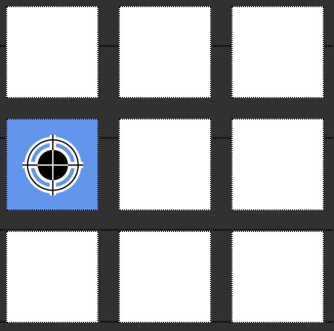
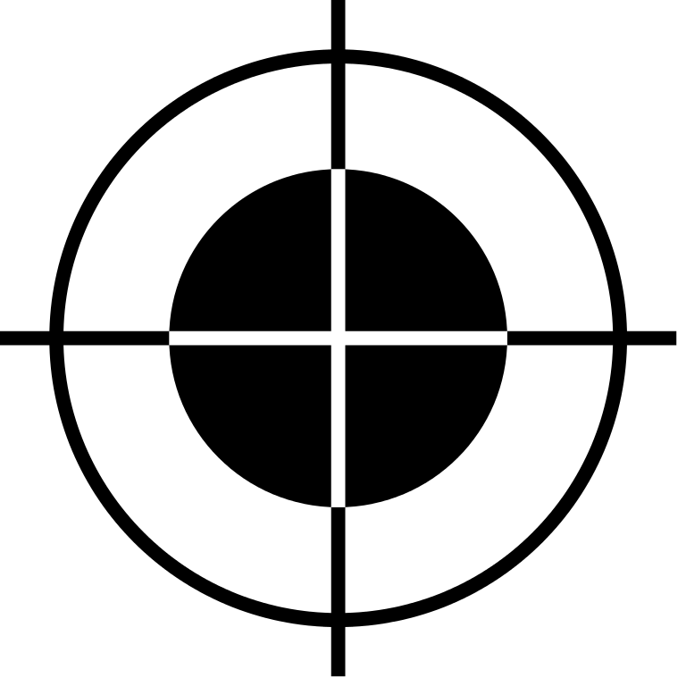

Willkommen zu der Aufmerksamkeitsaufgabe!
Bitte geben Sie Ihre Teilnehmernummer ein.
Instruktionen:
In dieser Aufgabe lernen Sie Kombinationen von Fraktalbildern und Münzen. Sie werden zwei unterschiedliche Fraktalbilder zu sehen bekommen, die entweder von einer Münze gefolgt werden oder von einem gelblichen Kreis. Wenn die Münze erscheint verdienen Sie diesen Betrag tatsächlich. Am Ende der Aufgabe wird Ihnen die Summe aller gezeigten Münzen ausgezahlt.
Dies ist ein Beispiel eines Fraktalbildes:

(*Kommentar: Kann auch durch einen screenshot des eigentlichen Bildschirms ersetzt werden *)
Dies ist ein Beispiel eines Münzbildes:
(*Kommentar: Kann auch durch einen screenshot des eigentlichen Bildschirms ersetzt werden *)
In jeder Runde wird die Münz- oder Kreisabbildung von einem Rechteck verdeckt. Sobald Sie das Rechteck sehen, können Sie es mit einem Klick auf die Leertaste entfernen, um zu enthüllen welche Abbildung sich dahinter verbirgt.
Bitte beachten Sie, dass das Erscheinen der Münz- oder Kreisabbildung NICHT abhängig ist von Ihrem Knopfdruck! Wenn Sie keine Taste drücken, verschwindet das Rechteck automatisch nach 1.5 Sekunden.
Sie werden den Ablauf einer Runde jetzt einmal üben.
Sie werden jetzt noch eine Übungsrunde spielen, aber dieses Mal drücken Sie bitte KEINEN Knopf, wenn das Rechteck erscheint! Schauen Sie einfach mal was dann passiert!
Wie Sie sehen, ist die Aufgabe nicht schwierig. Die Aufgabe wird maximal 10 Minuten dauern. Während der Aufgabe messen wir auch Ihre Augenbewegungen mittels der Webcam. Bevor die Aufgabe anfängt werden wir jetzt die Webcam erst an Ihre Augenbewegungen anpassen.
Bei der Kalibrierung wird auf dem Bildschirm mehrmals an verschiedenen Stellen ein Ziel-Symbol gezeigt. Klicken sie bitte mit der Maus auf die Mitte des Symbols, wenn es erscheint. WICHTIG: Schauen Sie dabei das Symbol direkt an, nur so funktioniert die Kalibrierung der Webcam.
(*Kommentar: kann von anderem screenshot ersetzt werden*)
Kalibration vorerst beendet - allerdings wird zwischen jeder 2. Frage die Kalibration kurz wiederholt. Die Aufgabe fängt jetzt an.

Schauen Sie auf das Zielsymbol und klicken Sie darauf.
Nächste Phase:
Diesmal verwenden Sie nicht die Maus, sondern versuchen sie das Symbol nur durch kurzes Hinblicken anzuwählen.

Dies ist das Ende dieser Aufgabe.
Vielen Dank!